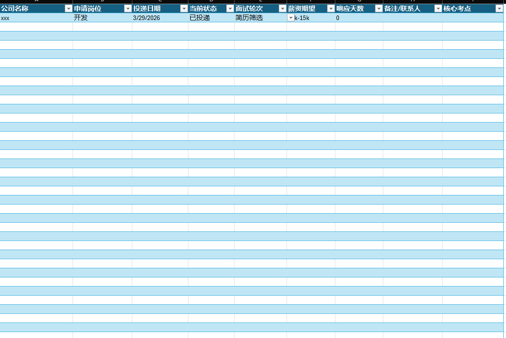
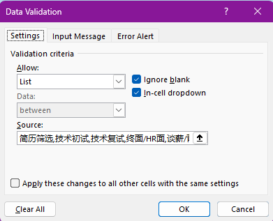

面试复盘表
0. 前言
在海投和多轮面试的过程中，信息碎片化是最大的敌人。你是否遇到过：接到 HR 电话却记不起投的是哪个部门？或者面完之后忘了哪些知识点没答好？
为了解决这些痛点，我用 Excel 搭建了一套轻量级的面试复盘系统。它不仅能追踪进度，还能通过公式自动计算“简历响应焦虑期”，并用颜色预警。
1. 核心结构设计
1.1 创建基础表头
新建一个 Sheet，在首行输入以下字段：
- 公司名称：面试主体。
- 申请岗位：区分前端/后端/架构等。
- 投递日期：记录起始点。
- 当前状态：已投递、简历通过、面试中、待 Offer、已拒绝、流程结束。
- 面试轮次：简历筛选、技术初试、技术复试、终面/HR 面、谈薪/背调。
- 薪资：期望或实际谈到的范围。
- 响应天数：自动计算从投递到现在的间隔。
- 核心考点：复盘的核心，记录面试中被问到的高频难点。
1.2 转换成“超级表”（关键步骤）
选中所有表头和下方几行，按下快捷键 Ctrl + T。
为什么要用超级表？ 超级表（Table）会自动向下填充公式，且自带筛选标题栏，后续增加新公司时，格式和逻辑会自动继承。

2. 功能增强：让表格“动”起来
2.1 设置状态下拉菜单 (Data Validation)
为了保证数据录入的一致性，避免手动输入（如“已投”和“已投递”混淆）：
- 选中“当前状态”列。
- 点击 Data 选项卡 -> Data Validation。
- 在 Allow 中选择 List，在 Source 中填入：
已投递,简历通过,面试中,待Offer,已拒绝,流程结束
同样的方法，为“面试轮次”设置下拉列表。

2.2 自动计算响应天数（公式优化）
我们希望：如果流程已经结束（拒信或录用），就不再计算天数；如果流程还在走，则自动显示从投递日到今天过去了几天。
在“响应天数”单元格输入公式：
=IF(OR(Sheet2!$C2="", Sheet2!$D2="流程结束", Sheet2!$D2="已拒绝",Sheet2!$D2="录用"), "", NETWORKDAYS(Sheet2!$C2, TODAY()))
逻辑解析：
- NETWORKDAYS：只计算工作日，避开周末，更符合 HR 的上班逻辑。
- IF(OR(…))：当状态为结束时返回空字符串，保持表格清爽。
2.3 视觉预警：条件格式 (Conditional Formatting)
当一家公司超过 5 天没响应，我们可能需要主动询问或跟进。
- 点击 Home -> Conditional Formatting -> New Rule。
- 选择 Format only cells that contain。
- 设置规则：Cell Value > 5，填充颜色设为浅红色。
3. 总结
这套 Excel 复盘表虽然简单，但抓住了求职过程中的几个关键点：
- 进度可视化：一眼看出哪些在池子里，哪些已挂。
- 知识沉淀：通过“核心考点”一列，可以在面下一家前快速回顾之前的盲区。
- 心态建设：看着天数自动跳动，能提醒我们及时调整心态，不要在一家“冷战”的公司上死等。
4. 资源下载
为了方便大家快速上手，我将文中演示的 Excel 模板整理好了，包含所有的超级表设置、下拉菜单及自动颜色公式。
面试复盘表
https://pusong10.github.io/2026/03/29/面试复盘表/